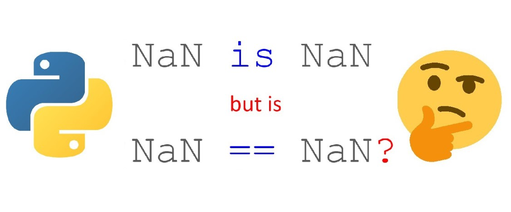

👉 This blog post was originally published my medium blog.
Introduction
When working with data with missing values (aka NA or not available), we have to be careful about the operations we do. In this short article, we will look at different NA data types that someone may deal with when working with Pandas or NumPy libraries.
There are different null objects such as numpy.nan/numpy.NaN (Not a Number), pandas.NaT (Not a Time), or python’s None type object. Null objects may behave unexpectedly and result in a semantic error (aka logic error) that is not easy to find or debug. Unlike syntax errors, your program will compile successfully even if there are semantic errors.
In this article, we will go over the following items:
- Comparison of null objects (“==” vs “is”)
- Finding null objects in Pandas & NumPy
- Calculations with missing values
NOTE: Data imputation/wrangling techniques are not a part of this article (a topic for a future article).
Comparing Null Objects (== vs. is )
When comparing a Python object that may be NA, keep in mind the difference between the two Python’s equality operators: “is”and “==”. Python’s keyword “is” compares the identities of two variables, while “==” compares two variables by checking whether they are equal. Let’s see how these two differ.
None == None
# >>> True
None is None
# >>> TrueWhen comparing Python’s None object, both “==” and “is” yield the same results. However, the output is different when numpy.nan null object is used!
numpy.nan == numpy.nan
# >>> False
numpy.nan is numpy.nan
# >>> TrueThis behavior may result in a semantic error, particularly if we do an element-wise comparison. For example, assume that we have
data = [1.0, np.nan, 2.0]And we want to print a message on whether there is a missing value in the data or not.
# Using "==" in the element-wise comparison
for x in data:
if x == np.nan:
print(f"Using '==' --> {x} is a nan!")
else:
print(f"Using '==' --> {x} is not a nan!")
# Using "is" in the element-wise comparison
for x in data:
if x is np.nan:
print(f"Using 'is' --> {x} is a nan!")
else:
print(f"Using 'is' --> {x} is not a nan!")Using '==' --> 1.0 is not a nan!
Using '==' --> nan is not a nan!
Using '==' --> 2.0 is not a nan!
Using 'is' --> 1.0 is not a nan!
Using 'is' --> nan is a nan!
Using 'is' --> 2.0 is not a nan!It is safer to use Pandas and/or NumPy’s built-in methods to check for missing values. We will cover this in the next section.
Finding null objects in Pandas & NumPy
It is always safer to use NumPy or Pandas built-in methods to check for NAs. In NumPy, we can check for NaN entries by using numpy.isnan() method. NumPy only supports its NaN objects and throws an error if we pass other null objects to numpy.isnan().
numpy.isnan(np.nan)
# >>> True
numpy.isnan(None)
# >>> TypeErrorI suggest you use pandas.isna() or its alias pandas.isnull() as they are more versatile than numpy.isnan() and accept other data objects and not only numpy.nan.
# pandas.isna() is an alias of pandas.isnull()
pandas.isna(np.nan)
# >>> True
pandas.isna(None)
# >>> True
pandas.isna(pd.NaT)
# >>> TrueCalculations with missing data
Let me tell you a story that happened to me a few days ago. I wanted to calculate the Median Absolute Deviation using mad() from the statsmodel library that is dependent on the median() function from NumPy. I had NaN entries in the data I was working on, and consequently, the output result was NaN since there was at least one missing value in the input array. It took me some time to find this semantic error. So, I figured the following out in a hard way:
Missing values propagate through arithmetic operations in NumPy and Pandas unless they are dropped or filled with a value.
The following examples illustrate what happens when we calculate some statistics from our data without considering the missing values:
2 + numpy.nan
# >>> nan
numpy.nan / 2
# >>> nanYou have to be cautious about NaNs in your data when you are calculating any statistic. For example, let’s calculate the mean of an array including a NaN.
numpy.mean([1.0, 2.0, 3.0, numpy.NaN])
# >>> nan
numpy.nanmean([1.0, 2.0, 3.0, numpy.NaN])
# >>> 2.0NumPy functions that calculate data statistics usually have counterpart functions to work with NaNs such as numpy.nansum() and numpy.nanstd().
Recommendations
- Always keep in mind the difference between equality operators “==” and “is”.
- Use Pandas built-in methods to check for NA entries.
- Pay attention to the behavior of functions in the presence of null objects, particularly functions to calculate statistical properties.
Conclusion
I believe next time you work with null objects in Python, you pay more attention to them. I hope you learned something useful from my first ever article on Medium.com. Feel free to provide me with any feedback or suggestion.
Useful Links
Citation
@online{alizadeh2019,
author = {Esmaeil Alizadeh},
title = {Working with {Missing} {Values} in {Pandas} and {NumPy}},
date = {2019-11-10},
url = {https://new.ealizadeh.com/blog/working-with-missing-values-in-pandas-and-numpy},
langid = {en}
}